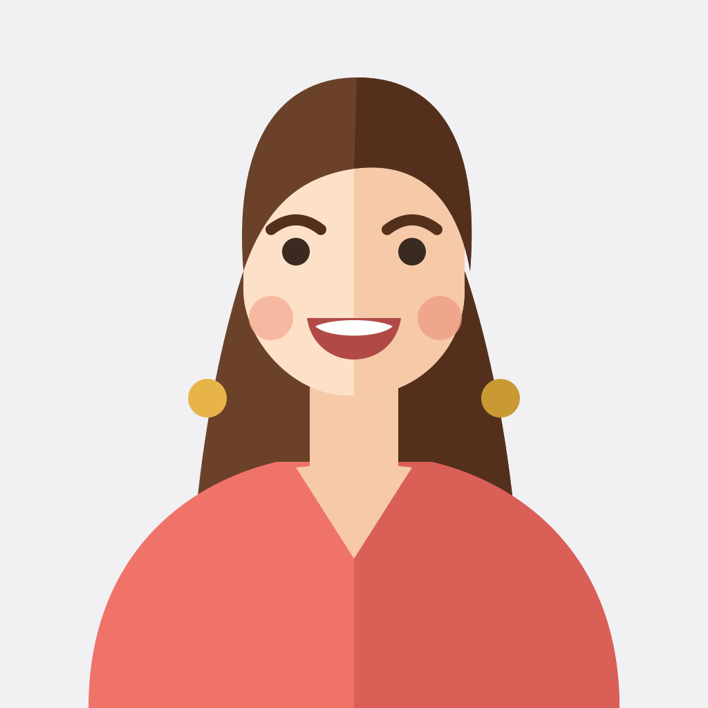
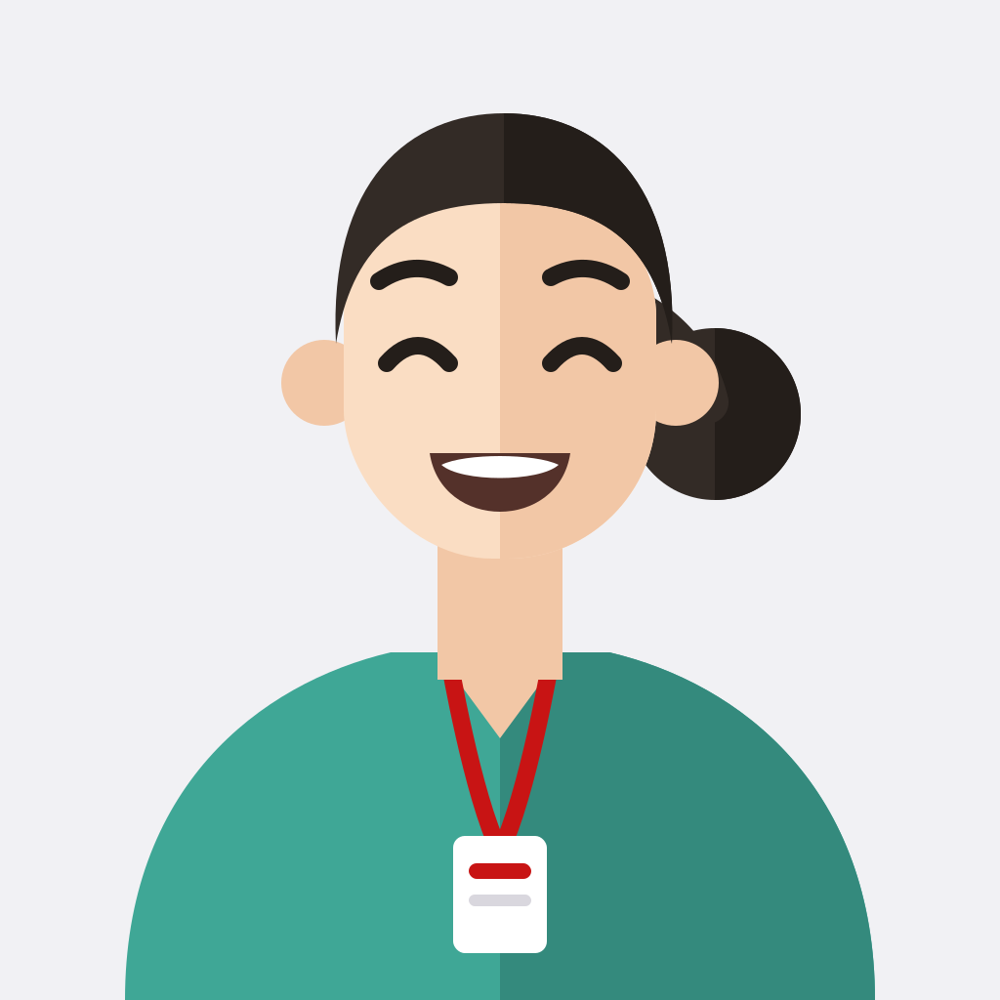
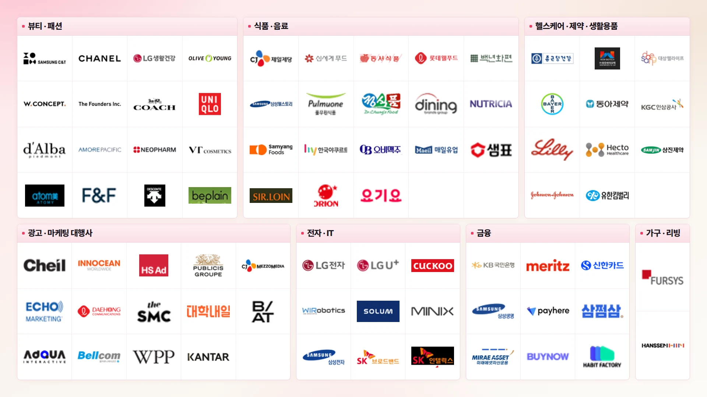

확신 없이 '뇌피셜'로 소구점을 정하고 계신가요?
내부 데이터로는 '무엇을'은 알아도 '왜'는 알 수 없나요?
그 답은, 검색데이터에 있습니다.
브랜드 전략과 연결되는 소비자 고민,
리스닝마인드에서 발견하세요.
아직도 키워드 검색량만 보고 계신가요?
리스닝마인드는
검색데이터 기반 '인텐트 분석 AI 플랫폼'으로
전략까지 이어지는 소비자 데이터를 보여줍니다.
"소비자가 우리 제품을 '진짜' 필요로 하는 순간은 따로 있었어요."
'건강식', '간편식', '건강 간편식' 키워드로 4년치 검색데이터를 뜯어보니, 예상했던 대로 시장 규모가 줄어들고 있었습니다. 하지만 그 안에서도 크게 성장하고 있는 CEP를 발견할 수 있었습니다.

글로벌 시장조사뷰티 브랜드 · 매출 5,000억원대 · 해외사업부"일본어를 몰라도, MCP 연결해서 일본 소비자의 속마음 읽었죠."
MCP로 챗봇과 연결해 대화하듯 질문만 던지면, 별도 번역이나 현지 리서처 없이 일본 소비자의 검색 인텐트를 바로 확인할 수 있었습니다.
"경쟁사보다 먼저 트렌드를 파악하는 법, 검색데이터로 가능했어요."
아직 언론이나 커뮤니티에 확산되기 전, 검색량이 조용히 움직이기 시작하는 시점을 포착해 차년도 주력 상품 후보를 미리 선별했습니다.
"소비자 진짜 고민을 콘텐츠로 연결하니 성과가 나기 시작했어요."
검색데이터에서 잠재고객의 고민을 발견해, 인텐트에 맞춘 콘텐츠로 연결했습니다.

경쟁 PT 전략 점검광고대행사 · 매출 900억원대 · 피플팀"우리가 확신했던 그 소구점, 소비자는 관심조차 없었습니다."
브랜드 실무자 입장에서 당연히 중요하다고 여겼던 키워드가, 실제 검색데이터에는 단 한 번도 등장하지 않았습니다.
다양한 업종의 브랜드가 리스닝마인드와 함께합니다

무료로
우리 브랜드 데이터 확인하기
리스닝마인드에 가입하면 누구나 7일간 무료 체험이 가능합니다.
가입 후 자사/경쟁사 검색데이터를 확인해 보세요.